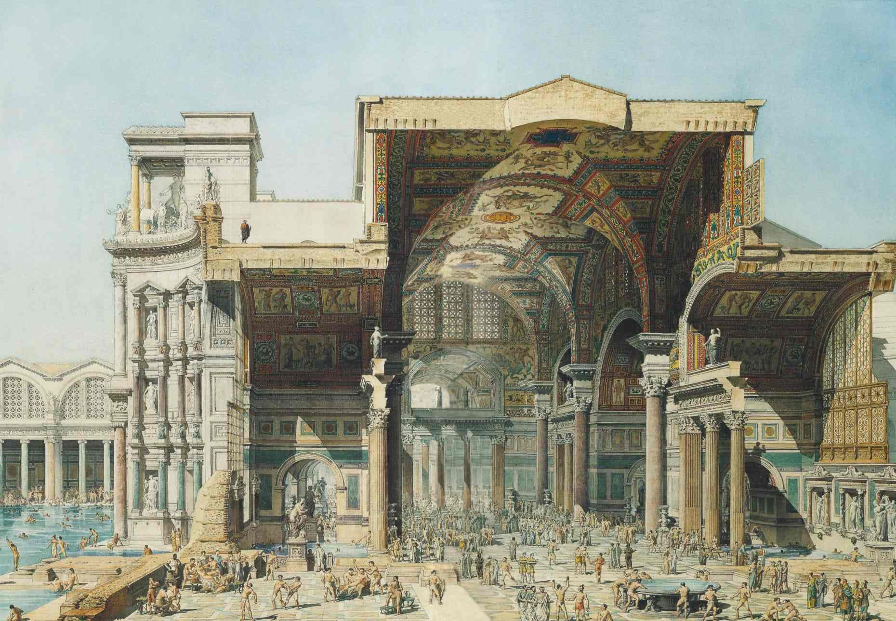

Priority 1
3D Knowledge Villa
把 Notion / Docs / Markdown 变成可逛的空间。适合 newsletter writers、course creators、researchers。
Pricing: $12/mo · $499 setup
openworld-js 已经跑通“墙上写字、贴照片”的核心 API。下一步不是做更复杂的引擎，而是把 Lark / Notion / Google Docs / Markdown 内容源，变成可分享、可收费、可 SEO 的 3D Knowledge Villa。
当前真正闭环的是 signboard 的 boards 协议。它已经可以支撑内容空间化 MVP。
全量读取信息板，供热点侧栏和 admin 管理页使用。
按 ID 合并懒加载，让大量墙面不必入口全量请求。
3D 编辑面板单条 upsert，保存文字、图片 URL 和备注。
SSE 实时推送变化，让管理后台、AI、3D 客户端联动。
admin 批量替换保存，适合导入器和迁移工具谨慎使用。
Canvas 函数库残留已清除，当前只保留 text/image 已闭环模式。
海外站不要定位成中文飞书工具。飞书/Lark 只是已跑通的 connector 原型，真正的产品应当抽象成内容源导入器。
Lark · Notion · Google Docs · Markdown · RSS · Readwise
split · summarize · place · route · SEO
auth · teams · billing · projects · publish
openworld-js · signboards · SSE · full-text modal
Turn your notes into a walkable 3D knowledge space.
按 2 个月内见效果排序，先做能录屏、能发帖、能收 setup fee 的海外小众工具。
把 Notion / Docs / Markdown 变成可逛的空间。适合 newsletter writers、course creators、researchers。
把博客、RSS、Substack archive 做成 2D SEO + 3D 展馆的个人主页。
把 syllabus、lesson notes、training docs 变成学生愿意逛的课程展馆。
为 novelists、TTRPG creators、game writers 做人物、地点、势力、时间线资料馆。
把复习内容变成每日 10 分钟空间路线，适合 visual thinkers 与 memory palace 用户。
把 SaaS 产品故事、案例、FAQ、截图做成可分享的 3D Demo Room。
Markdown/Lark 文档切成 20-80 张 boards，写入 signboard server。
入口、走廊、3 个房间、全文模态框、图片板，保证录屏好看。
项目、2D 列表、打开 3D、免费限制、公开链接，不做重 OAuth。
英文 landing page、录屏、20-50 个海外用户触达、$99-$499 setup。
当前仓库里已有可用于样板页和演示的视觉素材。后续真正销售页应换成录屏和真实 3D 空间截图。
